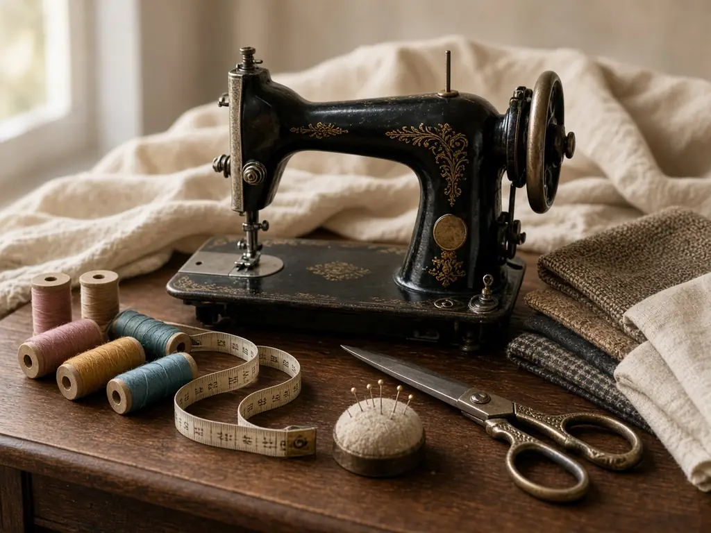

Seamstress & tailor · Newquay, Cornwall
Mended with care,Clothing Alterations & Repairs in Newquay
A mother-and-daughter sewing room led by Sylvia Tippett, a tailor with 50+ years' experience who spent her career as a tailor at RAF St Mawgan, and her daughter Maxine. Hems, zips, repairs, mending and curtains, finished to the standard of a military tailor.
- ✂ 50+ years' tailoring
- ✪ Ex-RAF St Mawgan tailor
- ♥ Mother & daughter
- ⏱ Express 24–48 hours


Our heritage
Military-standard tailoring, passed from mother to daughter
For more than 50 years Sylvia worked as a tailor for the military at RAF St Mawgan, just up the road from Newquay. Uniforms leave no room for "near enough": every hem level, every seam straight, every button where it should be. That is the standard she brings to your jeans, your coats and your curtains.
Over her career Sylvia has also made ball gowns, suits and wedding dresses, so she knows exactly how garments are put together. Today she works with her daughter Maxine Jennings, who has spent over three years at her side learning those skills, so the craft carries on in Newquay.
- 50+years Sylvia has tailored
- RAFSt Mawgan tailor
- 3+years Maxine at her side
Pick your fabric
Sewing services in Newquay
From a single button to a pair of blackout curtains, with clear guide prices for everything we do.
Trouser & jeans alterations
Hems, original-hem jeans, turn-ups, waists taken in and legs tapered.
Guide from £10Zips & buttons
Trouser, skirt, jeans and coat zips, buttons restitched and new buttonholes.
Guide from £3Repairs & mending
Split seams, small tears, patches and pocket bags, mended neatly.
Guide from £8Curtains & home
Unlined, lined and blackout curtains shortened, cushion zips replaced.
Guide from £12The full price list
Every guide price in one place, plus express and drop-off notes.
See guide prices →Everyday clothes, military standard
The small jobs, done properly
A jeans hem that keeps its faded factory edge. A coat zip set in dead straight. A split seam re-sewn so it never splits again. Our work is everyday alterations and repairs, and we finish every one with the precision Sylvia learned as a military tailor.

Honest pricing
Popular guide prices
We publish our guide prices so you know roughly what to expect before you walk in. The full list covers trousers and jeans, zips and fastenings, repairs and curtains.
Guide prices only. Every garment is different, so your final price is confirmed at drop-off or consultation, depending on the garment and the work needed. Nothing is started until you have agreed the price.
See every guide priceMost asked-for guide prices
| Standard Jeans Hem | £10 |
|---|---|
| Trouser Hem (Plain or Blind Stitch) | £12 |
| Trouser / Skirt Zip Replacement | £15 |
| Jeans Zip Replacement | £18 |
| Split Seam Restitching | £8–£12 |
| Shorten Curtains (Unlined, per pair) | From £20 |
Simple as that
How it works
1. Wash it
Clean items only, so please freshly wash garments and curtains before drop-off.
2. Pin it
We are happy to pin hems at drop-off, or pin or measure your preferred length at home.
3. We stitch it
Your price is confirmed at drop-off. Standard turnaround 3–5 days.
Need it fast?
Express service in 24–48 hours for an extra £5.
Around Newquay
Your local seamstress across mid & north Cornwall
Based in Newquay, with customers from St Columb, St Mawgan, Crantock, St Newlyn East, Perranporth, St Austell, Truro and beyond. See the areas we serve.
- 📍 Newquay
- 📍 St Columb Major
- 📍 St Mawgan & Mawgan Porth
- 📍 Crantock
- 📍 St Newlyn East
- 📍 Quintrell Downs
- 📍 Perranporth
- 📍 St Austell
- 📍 Truro
- 📍 Padstow & Wadebridge
- 📍 Indian Queens & St Dennis
- 📍 Holywell Bay & Cubert
You asked
Alterations questions
How much do alterations cost in Newquay?
Our guide prices start from £3 for a button and £10 for a standard jeans hem. Trouser hems are a guide £12, zip replacements from £15 and curtain shortening from £20 per pair. These are guide prices only: the final price is confirmed at drop-off or consultation, depending on the garment and the work needed.
How long do alterations take?
Standard turnaround is 3–5 days. If you need it sooner, our express service turns most jobs around in 24–48 hours for an extra £5.
Do my clothes or curtains need to be washed first?
Yes please. We can only work on clean items, so garments and curtains must be freshly washed before drop-off. It keeps the workroom (and everyone else's clothes) clean and means hems are measured on fabric that has already shrunk.
Can you pin my hem when I drop off?
Yes. We are happy to pin hems at drop-off, so bring the shoes you will wear with trousers or a dress. Alternatively you can pin or measure your preferred length at home and we will work to that.
Bring it in…
Ready to love your clothes again?
Wash it, bring it in and we will pin it, price it and stitch it. Standard turnaround is 3–5 days, with express 24–48 hours for an extra £5.